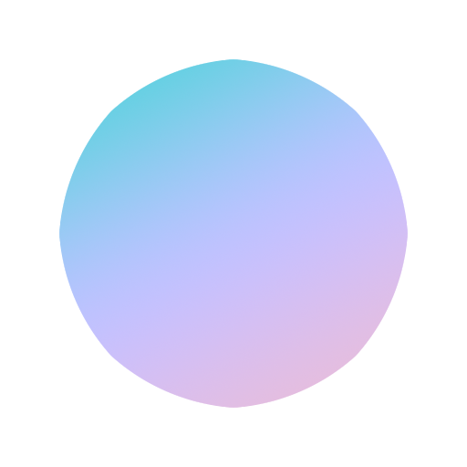 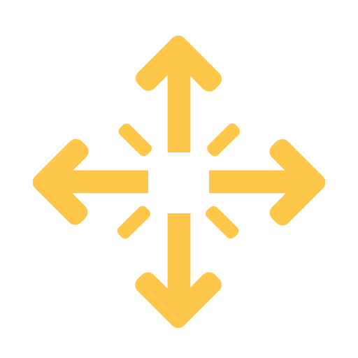 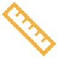 
Awesome Gargoyle
Mesh Model
visualisation tool
Measured length
0.0
Double-click to change focus.
Click-and-drag to navigate. Right-click and drag to pan.
Scroll to zoom in and out.

 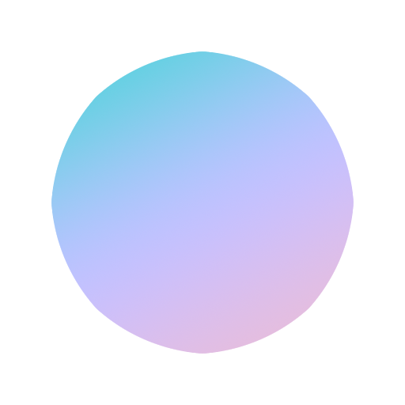
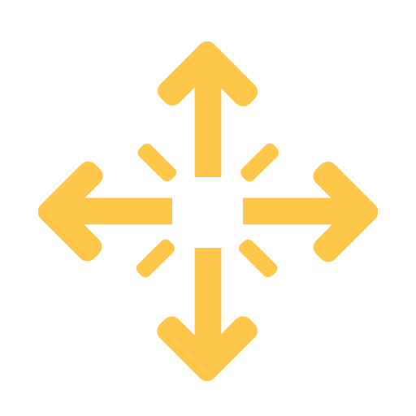
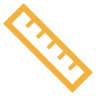
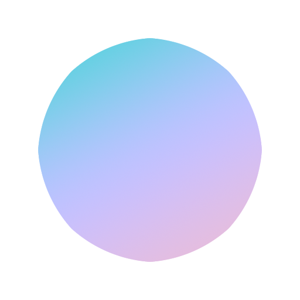
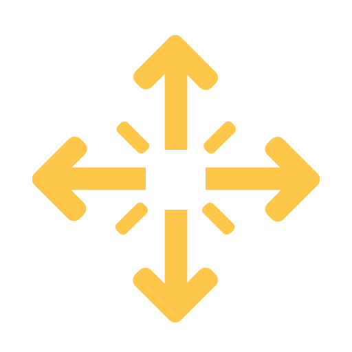
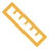

 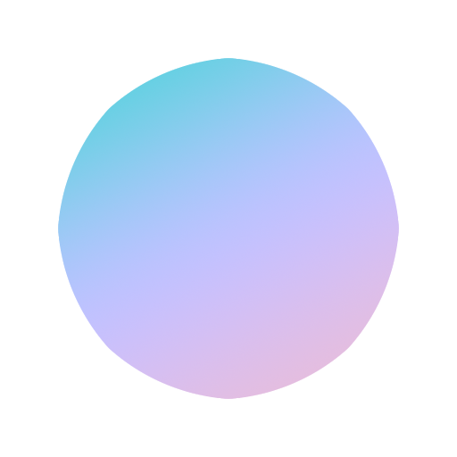
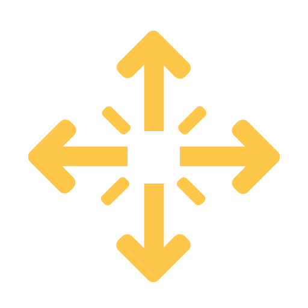
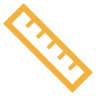
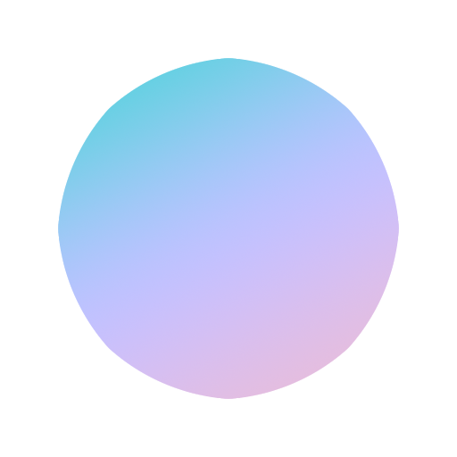
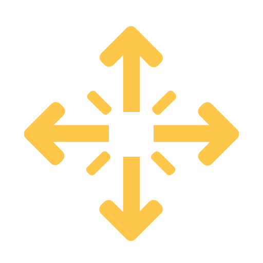
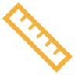
